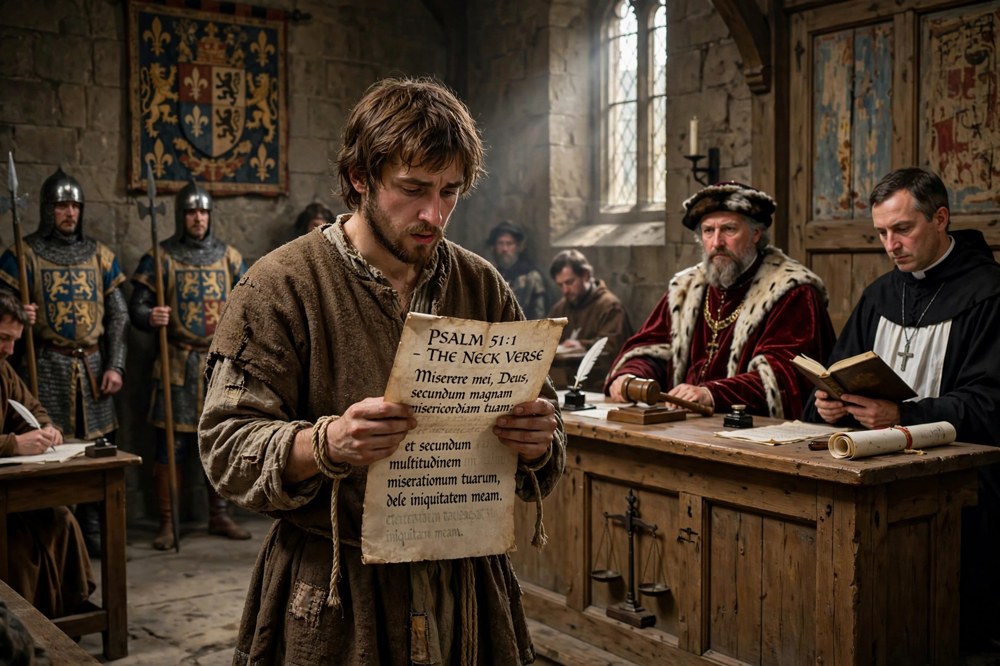

From Wikipedia, the free encyclopedia
| Benefit of clergy | |
|---|---|
 | |
| Origin | Medieval English law; conflict after the murder of Thomas Becket (1170) |
| Abolished | England 1827; United States federal courts 1790 |
In English law, the benefit of clergy was originally a provision by which clergymen accused of a crime could claim trial in the ecclesiastical courts, which imposed milder punishments than the secular courts. Over time it expanded into a legal fiction available to many first-time offenders who could prove literacy, and it served for centuries as a way of mitigating the harshness of a criminal code that imposed death for many felonies.
The privilege grew from the struggle between Henry II and Thomas Becket over "criminous clerks". After Becket's murder in 1170, clerics could not be tried in royal courts for serious crimes.
Because literacy was the practical test of clerk status, a defendant claimed the benefit by reading a verse — conventionally the opening of Psalm 51, Miserere mei, Deus ("Have mercy on me, O God") — known as the "neck verse" because it could save a man's neck from the gallows. Successful claimants were branded on the thumb so the plea could generally be used only once, and were handed over for lighter punishment.
Statutes progressively extended the plea to all who could read, then restricted it for serious offences and excluded women until the 17th century (extended fully in 1691). As literacy spread the fiction became indefensible; benefit of clergy was abolished in England by the Criminal Law Act 1827, and in US federal courts in 1790, though it lingered in some states into the 19th century.